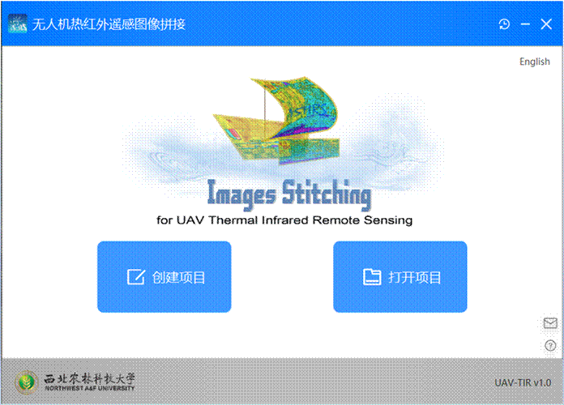
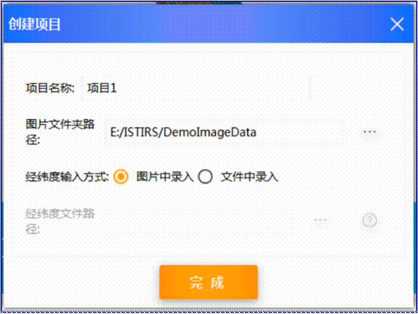
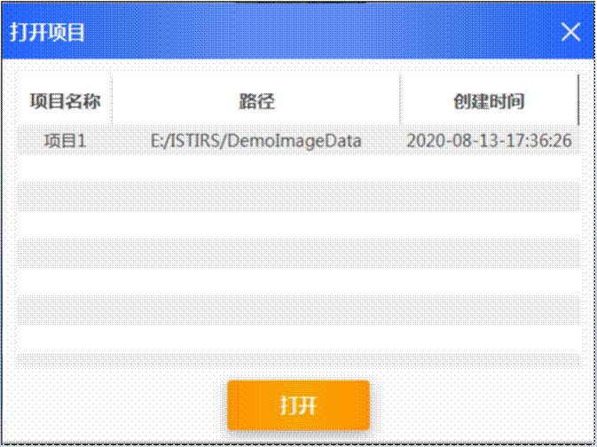
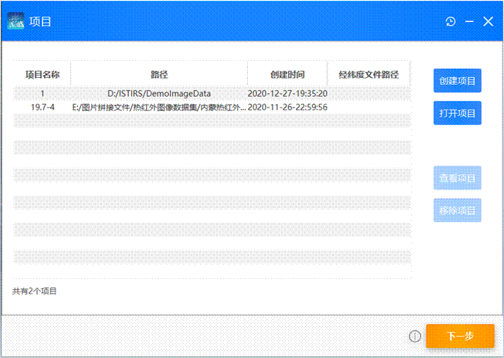
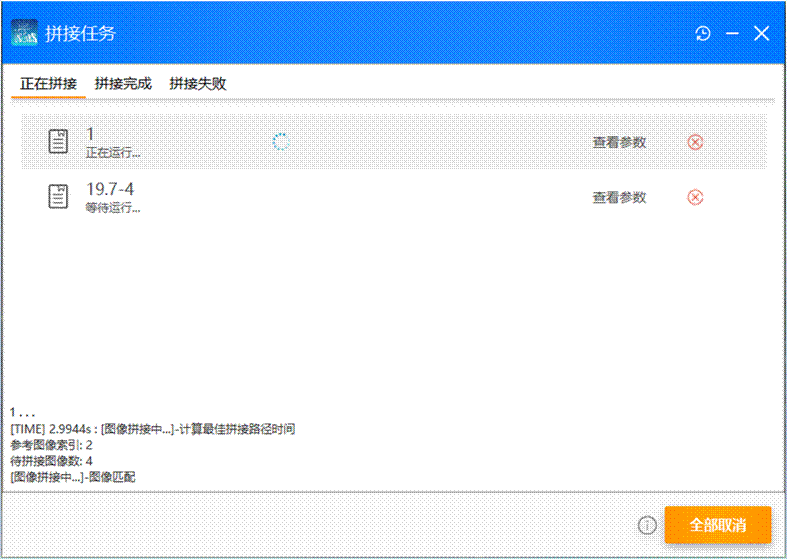
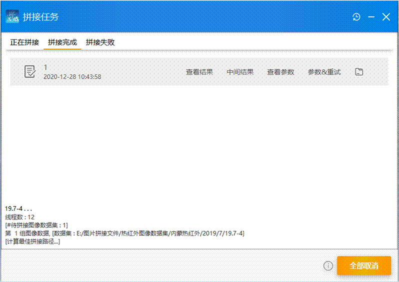
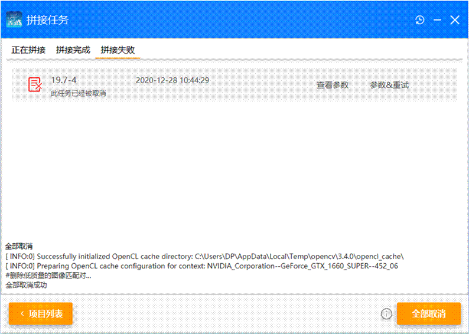
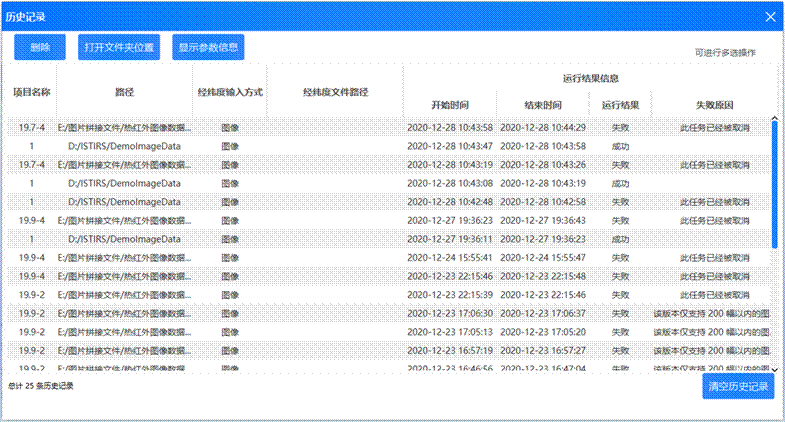
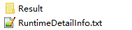
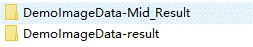

使用帮助文档
无人机热红外遥感图像拼接软件
目录
开始使用
>> 项目信息 >>
参数配置 >>
拼接
>> 历史记录 >>
更进一步 >> 其他
一．开始使用
1．语言选择
软件可随意切换为 简体中文与英文 两个版本。

2．创建新项目
点击“创建项目”或
从系统文件管理器拖入需要拼接的图像文件夹。

- 输入项目名，选择需要拼接的图像路径，以及经纬度数据输入数据。
- 提示：经纬度数据输入有两种方式：
1.从图像输入经纬度数据：需要图像携带经纬度数据。
2.从文件输入经纬度数据：TXT或Tetracam飞行日志文件。
TXT文件格式为：(图像名称,纬度,经度,高度)。
例:DJI_0006.jpg,36.8284518611111,116.570739083333,118。
3.打开项目
- 点击“打开项目”，来重新打开之前已创建的项目。

经过上面两种方式，我们就成功导入了要拼接的项目，接下来，我们看下项目的详细信息吧。
二．项目信息
1.
项目列表界面
软件支持导入多项目进行顺序拼接，节省您的时间。

- 点击“创建项目”或 从系统文件管理器拖入需要拼接的图像文件夹。
- 点击“打开项目”导入之前已创建的项目。
- 点击“移除工程”来讲选择的项目移出本次拼接。
- 点击“查看工程”进入项目及项目图像详细信息界面
2.
项目及项目图像数据

- 双击列表 或
点击“查看图像”来查看所选图片。
- 单击列表 将展示对应图像的内容。
- 点击“移除图像”或按DELETE，将所选图像移出此项目，即所选图像不参与拼接。
- 点击“恢复图像”，将所选图像重新加入此项目。
- 按住CTRL或SHIFT后，点击列表，进行多选操作。
- 修改项目信息。
是不是感觉图片列表不太直观，别着急，我们考虑到了。根据图片经纬度数据，画出了飞行轨迹。接下来，我们来看下有多直观吧！
3.
无人机飞行轨迹
点击“飞行路径”来查看可视化的无人机飞行轨迹。
通过可视化的方式来直观了解无人机飞行的轨迹以及拍摄地点。

- 点击“记录点”来查看此记录点的图像。
- 按住CTRL或SHIFT后，点击“记录点”，进行多选操作。
- 右键“记录点”后点击删除
或 按DELETE，来将所选“记录点”对应图像移出拼接。
- 按住CTRL后，滚动鼠标滚轮 来放大查看细节信息。
- 当然，值得知道的是，飞行路径数据是与前一界面中的图片数据列表是可以交互的，快去去试一下吧！
项目配置好了，那我们接下来配置拼接时需要用到的参数吧！
注：由于算法处于测试阶段，此版本暂时支持单个项目参与拼接图像不超过200幅。若单个项目超过数量，请点击“查看项目”，选择要拼接的图像。
三．参数配置
每个项目都可以有各自的一套参数，在之后的拼接中，各个项目会采用自己所对应的参数来进行拼接图像。
1．单独设置项目参数

- 输入参数后点击“保存”来单独设置所选项目的参数配置。
当然，单独设置是不是有些繁琐？别担心，我们很贴心地设计了“参数模板”，模板会保存在您的电脑上，下次使用它们还在那里~并且可以批量设置到项目上。
我们来看下参数模板如何使用吧！
2．参数模板
点击“添加参数模板”
- 配置好参数后，在右方列表中选择要采用此套参数的项目。点击“完成”。
- 我们也可以双击“参数模板列表”来进行再次修改。
参数配置好了，那我们就开始拼接项目吧！
四．拼接
点击“拼接”，进入拼接界面。
1．正在拼接项目
软件会顺序的拼接所选项目。稍等片刻......
期间，我们可以放松一下眼睛，也可以查看项目对应的参数，也可以取消某个项目拼接。

2．拼接成功
项目拼接成功后会移动到拼接完成列表。


图：拼接成功的图像
我们来看下成功的拼接结果吧！
- 点击“查看结果”，将直接打开拼接结果图像。
- 点击“中间结果”，将打开存放拼接中保存的中间数据的文件夹。
- 点击“参数&重试”，我们可以修改参数后，再次拼接此项目。
- 点击  ，将打开存放拼接结果所有数据的文件夹。
，将打开存放拼接结果所有数据的文件夹。
3．拼接失败
当然，也可能会因为参数、拼接图像等原因导致项目拼接失败。
在拼接失败列表，我们可以 获取到项目失败的原因，得知失败原因后，我们可以根据报错原因来进行项目或者参数的调整。

- 点击“项目列表”，来添加、移除、修改项目。
- 点击“参数&重试”，来调整参数，再次拼接此项目。
到此为止，我们就成功地得到了拼接项目的结果。
软件也会贴心的将拼接结果和其他拼接信息保存到本地，我们可以随时查看拼接历史。
接下来，我们就来看一下拼接历史记录功能吧！
五．历史记录
也许您已经注意到了，在软件右上角，有一个图标，点击它将打开“历史记录”界面。

- 在此界面您可以查看到所有拼接历史记录。可以查看项目信息、查看参数信息、查看失败原因以及查看拼接结果。
- 点击“删除”，将删除选中的历史记录。
- 点击“打开文件夹位置”或
双击列表，将打开历史记录的拼接结果文件夹。
六．更进一步
拼接缓存文件：打开软件项目拼接结果文件，您可以看到很多缓存文件，这些文件有助于您进行科研或者进一步得到更多额外有用信息。
下面将介绍每个文件记录的内容:

-
Result文件夹 : 存放拼接结果及拼接中间缓存数据。
-
RuntimeDetailInfo.txt : 为运行日志。

-
项目名-Mid_Result文件夹 : 存放拼接中间缓存数据。
-
项目名-result文件夹 : 存放拼接结果图像。
七. 其他
-
在您对软件某按钮、某文本信息等
有疑问时，您可以将鼠标放在上面一会儿，可能对您会有所帮助。